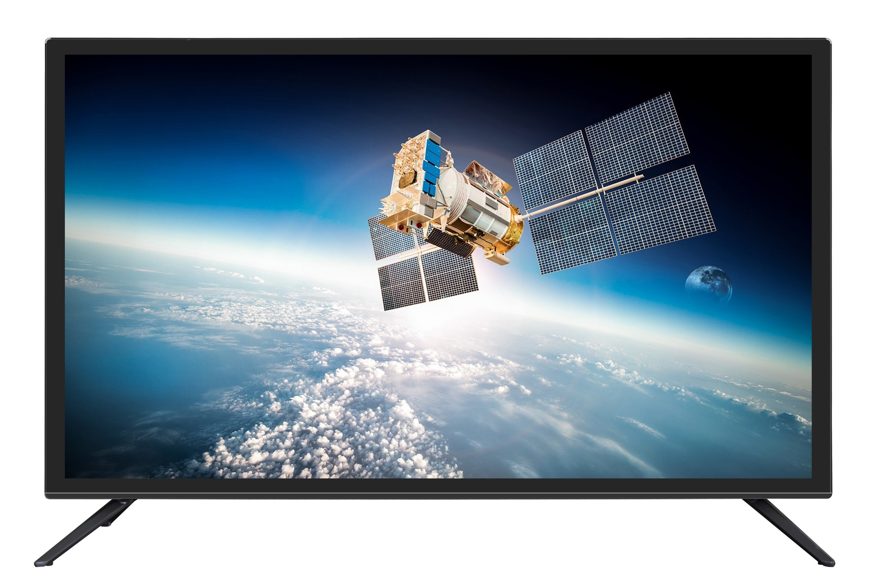
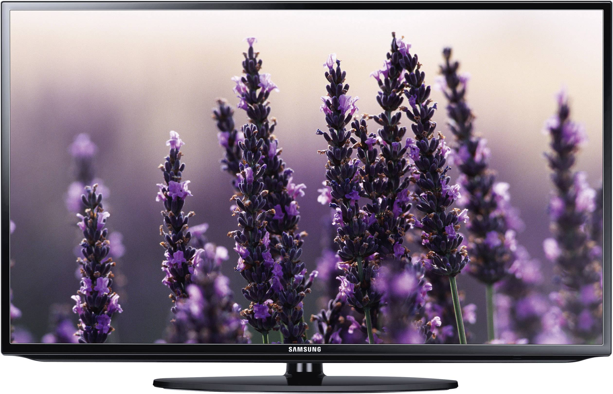
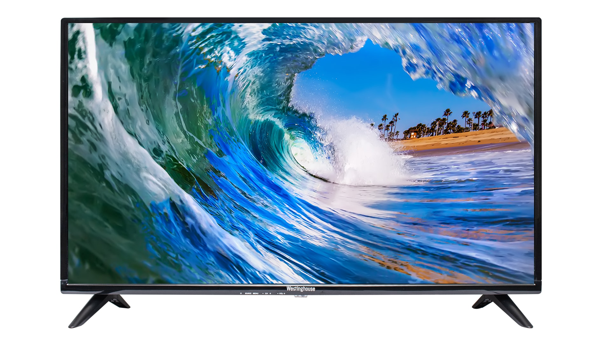

Smart, HD, color LED TV
Pod označením Vivax 32S60T2S2 sa ukrýva televízor s elegantnou konštrukciou, decentnými rámčekmi a radou funkcií,
ktoré zlepšia pocit zo sledovania na maximum. Tešiť sa teda môžete na detailné HD rozlíšenie alebo skvelý zvuk.
Nechýba ani USB port pre prehrávanie a nahrávanie médií.
Veľkosť: 32 palcov
Pomer strán: 16:9
Rozlíšenie: 720P
Podsvietenie: LED
Obnovovacia frekvencia: 50Hz
CENA: 149,99€

Samsung, 40 Inches, Class 5, LED, Smart Tizen TV
Vďaka pokrokovým technológiám dokáže Samsung TV zobraziť štvornásobné množstvo pixelov,
lepšie pracuje s jasom a disponuje takmer nekonečnou paletou farebných odtieňov. Výsledkom je ostrý, jasný a realistický
obraz plný detailov. Na displeji môžete zdieľať obrazovku vášho počítača a pracovať na väčšej ploche.
Svoje využitie si veľká obrazovka nájde aj pri hraní hier, pri ktorom vďaka hernému režimu budete mať akčné scény pod kontrolou.
Veľkosť: 40 palcov
Pomer strán: 16:9
Rozlíšenie: 4K
Podsvietenie: LED
Obnovovacia frekvencia: 100Hz
CENA:379,99€

Flat Screen, 42 Inches, Smart, Full-HD, Color LED TV
Televízor LG OLED sa vďaka technológii samosvietiacich pixelov dostal na špičku medzi televízormi.
Zažite pri sledovaní hororu čiernočiernu tmu a skvostnú živosť farieb nádherných motýľov a kvetov pri sledovaní prírodovedného programu.
Môžete sa tešiť z každého detailu. Viac než 100 miliónov pixelov sa jednotlivo rozsvieti a zhasína podľa potreby.
Veľkosť: 42 palcov
Pomer strán: 16:9
Rozlíšenie: 1080P
Podsvietenie: LED
Obnovovacia frekvencia: 100Hz
CENA: 449,99€

Samsung LED TV, 63 Inches, Full HD, Smart TV
Pri televízore je najdôležitejší perfektný obraz. Samsung TV má niekoľko technológií pre dokonalé vykreslenie farieb,
perfektný jas, vysoké rozlíšenie a plynulé prehrávanie. Reproduktory a soundbar dokreslia atmosféru zvukom vo vysokej kvalite.
Vďaka tenkému telu a minimálnym rámčekom vyzerá Samsung TV dokonale.
Káble sa schovajú v stojane, a výhľad preto nič neruší. Navyše, televízor môžete jednoducho pripojiť k telefónu alebo notebooku a využiť väčšiu obrazovku.
Veľkosť: 63 palcov
Pomer strán: 16:9
Rozlíšenie: 1080P
Podsvietenie: LED
Obnovovacia frekvencia: 100Hz
CENA: 519,99€

Philips, 50 Inches, Smart, LED TV
Moderný 4K LED televízor, ktorý vás oslní skvelým obrazom, zvukom a všestrannými funkciami. Vysoké rozlíšenie,
sýte reálne farby a plynulý pohyb doplnený o hlboký priestorový zvuk urobia zo sledovania obľúbeného seriálu či filmu nevšedný zážitok.
Navyše budete do deja vtiahnutí ešte viac a to vďaka technológii Ambilight, ktorá vytvára dojem väčšieho obrazu.
Televízor disponuje operačným systémom Android, v ktorom môžete sťahovať hry, používať aplikácie alebo vyhľadávať
v databáze najnovšie filmy. O tom, že ide o moderný televízor, vás presvedčí aj možnosť ovládať ho hlasom.
Veľkosť: 50 palcov
Pomer strán: 16:9
Rozlíšenie: 4K
Podsvietenie: LED
Obnovovacia frekvencia: 200Hz
CENA: 679,99€